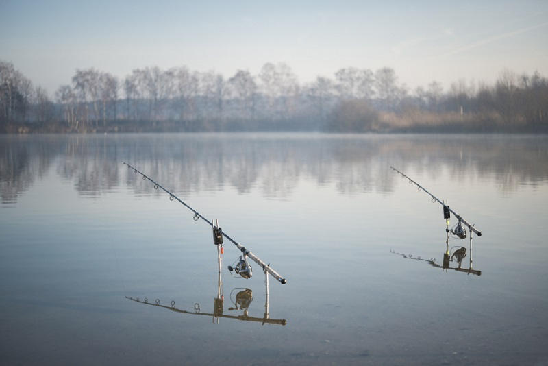

Visclub De Meeren
Over Ons
Opgericht op 10 oktober 2010 met één missie: terug naar de natuur.
Visclub De Meeren
Opgericht op 10 oktober 2010 met één missie: terug naar de natuur.
Onze missie
Met deze gedachte in het achterhoofd heeft een groep enthousiaste vissers Vis Club De Meeren opgericht. Deze club is tot stand gekomen op 10 oktober 2010. Het doel van VC De Meeren is om weer back to nature te gaan.
Een visclub waar gezelligheid hoog in het vaandel staat! Vis Club De Meeren bestaat uit een bestuur van 5 leden, een witviscommissie, 35 witvisvergunninghouders en 26 karpervisvergunninghouders.

Het team
Onze waarden
Samen vissen, samen genieten. Gezelligheid staat hoog in het vaandel.
Back to nature. Het authentieke karakter van het water blijft intact.
Respect voor de vissen, de natuur en mede-leden. Catch & release.
Witvisvergunningen zijn beschikbaar. Kijk op de contactpagina voor meer informatie.
Vergunning aanvragen